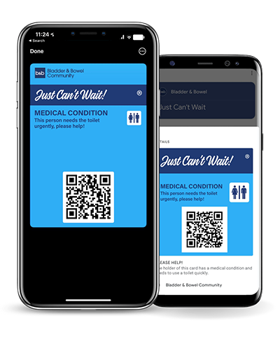

<!DOCTYPE html>
<html lang="en">
<head>
    <meta charset="UTF-8" />
    <meta name="viewport" content="width=device-width, initial-scale=1, shrink-to-fit=no" />
    <title>Life with a Stoma</title>
    <link rel="stylesheet" href="./css/main.css">
    <link rel="stylesheet" href="https://cdnjs.cloudflare.com/ajax/libs/font-awesome/4.7.0/css/font-awesome.min.css">
    <link rel="stylesheet" href="https://use.fontawesome.com/releases/v6.0.0/css/all.css">
    <link rel="stylesheet" href="https://fonts.googleapis.com/css2?family=Roboto:wght@300;400;500;700&display=swap">
    <link rel="stylesheet" href="./css/mdb.min.css">
    <link rel="stylesheet" href="https://cdnjs.cloudflare.com/ajax/libs/font-awesome/4.7.0/css/font-awesome.min.css">
</head>
<body>
  <script src="https://cdn.jsdelivr.net/npm/bootstrap@5.3.3/dist/js/bootstrap.bundle.min.js" integrity="sha384-YvpcrYf0tY3lHB60NNkmXc5s9fDVZLESaAA55NDzOxhy9GkcIdslK1eN7N6jIeHz" crossorigin="anonymous"></script> 
  <script src="https://cdn.jsdelivr.net/npm/@popperjs/core@2.11.8/dist/umd/popper.min.js" integrity="sha384-I7E8VVD/ismYTF4hNIPjVp/Zjvgyol6VFvRkX/vR+Vc4jQkC+hVqc2pM8ODewa9r" crossorigin="anonymous"></script>
  <script src="https://cdn.jsdelivr.net/npm/bootstrap@5.3.3/dist/js/bootstrap.min.js" integrity="sha384-0pUGZvbkm6XF6gxjEnlmuGrJXVbNuzT9qBBavbLwCsOGabYfZo0T0to5eqruptLy" crossorigin="anonymous"></script>
</body>
</html>
        <!--Main Navigation-->
    <header>
      <style>
        #introCarousel,
        .carousel-inner,
        .carousel-item,
        .carousel-item.active {
          height: 100vh;
        }

        .carousel-item:nth-child(1) {
          background-image: url('./assets/images/Energy-preview-03_1024x1024.webp');
          background-repeat: no-repeat;
          background-size: cover;
          background-position: center center;
        }
        .carousel-item:nth-child(2) {
          background-image: url('./assets/images/pngtree-concepts-to-increase-the-power-of-positive-thinking-and-developing-their-image_15746559.jpg');
          background-repeat: no-repeat;
          background-size: cover;
          background-position: center center;
        }
        .carousel-item:nth-child(3) {
          background-image: url('./assets/images/download.jpeg');
          background-repeat: no-repeat;
          background-size: cover;
          background-position: center center;
        }

        @media (min-width: 992px) {
          #introCarousel {
            margin-top: -58.59px;
          }
          #introCarousel,
          .carousel-inner,
          .carousel-item,
          .carousel-item.active {
            height: 50vh;
          }
        }

        .navbar .nav-link {
          color: #fff !important;
        }

        * {
    box-sizing: border-box;
        }
        
        body {
          font-family: Arial;
          margin: 0;
        }
        
        .header {
          padding: 60px;
          text-align: center;
          background: #e5b1b1;
          color: white;
        }
        
        .navbar {
          list-style-type: none;
          display: flex;
          background-color: #333;
          text-align: center;
          text-decoration: none;
        }
        
        .navbar a {
          list-style-type: none;
          color: white;
          padding: 14px 20px;
          text-decoration: none;
          text-align: center;
        }
        
        .navbar a:hover {
          background-color: #ddd;
          color: black;
          opacity: 0.7;
        }

        .row {  
          display: flex;
          flex-wrap: wrap;
        }
        
        .side {
          flex: 30%;
          background-color: #f1f1f1;
          padding: 20px;
        }
        
        .main {
          flex: 70%;
          background-color: white;
          padding: 20px;
        }

        .img {
          background-color: #aaa;
          width: 100%;
          padding: 20px;
        }
        
        .box {
          background-color: #e5b1b1;
          width: 100%;
          padding: 20px;
        }
        
        .footer {
          padding: 20px;
          text-align: center;
          background: #ddd;
        }
        
        @media screen and (max-width: 700px) {
          .row, .navbar {   
            flex-direction: column;
          }
        }

        /* dropdown nav menu & submenu style */
        nav ul li{
          list-style-type: none;
          display: inline-block;
          background-color: #333;
          text-align: center;
          padding: 0.3rem 0 0 0.1rem;
          }
        nav ul li:last-child{
          margin-right: 0;
          background-color: #333;
          }
        nav ul li a{
          color: #333;
          display: inline-block;
          transition: all ease 0.3s;
          background-color: #333;
          list-style-type: none;
          color: white;
          padding: 0.3rem 0 0 0.1rem;
          text-decoration: none;
          text-align: center;
          }
        nav ul li a:hover{
          color: #333;
          background-color: #333;
          }
        nav ul .submenu{
          list-style-type: none;
          position: absolute;
          width: 200px; 
          box-shadow: 0 20px 45px #00000020;
          margin-top: center;
          margin-bottom: center;
          opacity: 0;
          transition: all ease 0.5s;
          background-color: #333;
          }
        nav ul li:hover .submenu{
          opacity: 1;
          margin-top: 0;
          background-color: #333;
          text-align: left;
          }
        nav ul .submenu li{
          margin: 0;
          width: 100%;
          background-color: #333;
          text-align: left;
          } 
        nav ul .submenu li a{
          display: inline-block;
          width: 100%;
          background-color: #333;
          text-align: left;
          }
        nav ul .submenu li a{
          padding: 15px 20px;
          display: inline-block;
          width: 100%;
          background-color: #333;
          text-align: center;
          text-decoration: none;
          }
        
</style>

<nav class="navbar navbar-expand-lg navbar-dark bg-dark" style="z-index: 2000;">
  <script href="https://cdn.jsdelivr.net/npm/bootstrap@5.3.3/dist/js/bootstrap.bundle.min.js" integrity="sha384-YvpcrYf0tY3lHB60NNkmXc5s9fDVZLESaAA55NDzOxhy9GkcIdslK1eN7N6jIeHz" crossorigin="anonymous"></script> 
  <script href="https://cdn.jsdelivr.net/npm/@popperjs/core@2.11.8/dist/umd/popper.min.js" integrity="sha384-I7E8VVD/ismYTF4hNIPjVp/Zjvgyol6VFvRkX/vR+Vc4jQkC+hVqc2pM8ODewa9r" crossorigin="anonymous"></script>
  <script href="https://cdn.jsdelivr.net/npm/bootstrap@5.3.3/dist/js/bootstrap.min.js" integrity="sha384-0pUGZvbkm6XF6gxjEnlmuGrJXVbNuzT9qBBavbLwCsOGabYfZo0T0to5eqruptLy" crossorigin="anonymous"></script>

  <div class="container-fluid">
    <a class="navbar-brand" href="./index.html"><strong>Home</strong></a>
    <ul>
      <li><a class="nav navbar" style="padding: 15px 0 0 5px;" href="#">Chronic Illnesses</a>
          <ul class="submenu">
              <li><a class="nav" href="./crohns.html">Crohn's Disease</a></li>
              <li><a class="nav" href="./addisons.html">Addison's Disease</a></li>
              <li><a class="nav" href="./triad.html">The Triad</a></li>
              <li><a class="nav" href="./osteo.html">Osteoporosis</a></li>
              <li><a class="nav" href="./stoma.html">Stoma</a></li>
          </ul>
      </li>
    </ul>
    <a class="nav" href="./resources.html">Resources</a>
    <a class="nav" href="https://www.pinterest.co.uk/Charmau24/crohns/"><i class="fa fa-pinterest" style="font-size:24px"></i></a>
    <a class="nav" href="https://www.linkedin.com/in/charlotte-maughan"><i class="fa fa-linkedin-square" style="font-size:24px"></i></a>           
    </div>
  </div>
</nav>
      <!-- Carousel wrapper -->
      <div id="introCarousel" class="carousel slide carousel-fade shadow-2-strong" data-mdb-carousel-init>
        <!-- Indicators -->
        <div class="carousel-indicators">
          <li data-mdb-target="#introCarousel" data-mdb-slide-to="0" class="active"></li>
          <li data-mdb-target="#introCarousel" data-mdb-slide-to="1"></li>
          <li data-mdb-target="#introCarousel" data-mdb-slide-to="2"></li>
        </div>

        <!-- Inner -->
        <div class="carousel-inner">
          <!-- Single item -->
          <div class="carousel-item active">
            <div class="mask" style="background-color: rgba(0, 0, 0, 0.6);">
              <div class="d-flex justify-content-center align-items-center h-100">
                <div class="text-white text-center" data-mdb-theme="dark">
                  <h1 class="mb-3">Life with a Stoma</h1>                
                </div>
              </div>
            </div>
          </div>

          <!-- Single item -->
          <div class="carousel-item">
            <div class="mask" style="background-color: rgba(0, 0, 0, 0.3);">
              <div class="d-flex justify-content-center align-items-center h-100">
                <div class="text-white text-center">
                  <h1 class="mb-3">Stop waiting and start doing</h1>
                </div>
              </div>
            </div>
          </div>

          <!-- Single item -->
          <div class="carousel-item">
            <div
              class="mask"
              style="
                background: linear-gradient(
                  45deg,
                  rgba(29, 236, 197, 0.7),
                  rgba(91, 14, 214, 0.7) 100%
                );
              "
            >
              <div class="d-flex justify-content-center align-items-center h-100">
                <div class="text-white text-center" data-mdb-theme="dark">
                  <h2>One, small positive thought in the morning</h2>
                  <h2>can change your whole day</h2>
                  <div class="mask" style="background-color: hsla(0, 0%, 98%, 0.4)"></div>
                </div>
              </div>
            </div>
          </div>
        </div>
        <!-- Inner -->

        <!-- Controls -->
        <a class="carousel-control-prev" href="#introCarousel" role="button" data-mdb-slide="prev">
          <span class="carousel-control-prev-icon" aria-hidden="true"></span>
          <span class="sr-only">Previous</span>
        </a>
        <a class="carousel-control-next" href="#introCarousel" role="button" data-mdb-slide="next">
          <span class="carousel-control-next-icon" aria-hidden="true"></span>
          <span class="sr-only">Next</span>
        </a>
      </div>
      <!-- Carousel wrapper -->
    </header>
    <!--Main Navigation-->

    <!--Main layout-->
    <main class="mt-5">
      <div class="container">
        <!--Section: Content-->
        <section>
          <div class="row">
            <div class="col-md-6 gx-5 mb-4">
              <h4><strong>What is a stoma?</strong></h4>              

              <p class="text-muted">
                A stoma is an opening on the abdomen that can be connected to either your digestive 
                or urinary system to allow waste (urine or faeces) to be diverted out of your body.</p>

                <p class="text-muted">
                  It looks like a small, pinkish, circular piece of flesh that is sewn to your body.
                  It may lie relatively flat to your body, or it may stick out a bit!</p>

                <p class="text-muted">
                  A pouch is worn over the stoma to collect the output waste. Pouches can either have
                 a closed base or an opening end.</p>

                <p><strong>KEY TO NOTE:</strong><p class="text-muted">Your stoma has no nerve endings so you should feel no pain from it.</p>

              <h4><strong>Who needs a stoma?</strong></h4>
              <h6>Are there certain conditions that need stomas/</h6>
              <p class="text-muted">
                There are many reasons why someone may need a stoma. Common reasons include:
                A stoma can be temporary or permanent depending on the cause.
                <li class="text-muted">Bowel cancer</li>
                <li class="text-muted">Bladder cancer</li>
                <li class="text-muted">Crohn's disease</li>
                <li class="text-muted">Ulcerative colitis</li>
                <li class="text-muted">Diverticulitis</li>
                <li class="text-muted">Bowel obstruction</li>
                <li class="text-muted">Bladder obstruction...and more</li>
              </p>

              <h4><strong>Types of Stoma</strong></h4>
              <li class="text-muted"><strong>Colostomy</strong></li>
                <p class="text-muted">A colostomy is formed when a part of your large bowel
                  is pulled through from an incision made on your abdomen to form a stoma.</p>

              <li class="text-muted"><strong>Ileostomy</strong></li>
                <p class="text-muted">An ileostomy is formed when part of your small bowel
                   is pulled through an incision made on your abdomen to form a stoma.</p>

              <li class="text-muted"><strong>Urostomy</strong></li>
                <p class="text-muted">A urostomy is formed when your bladder is removed due 
                  to disease such as bladder cancer or obstruction.</p>

              <h4><strong>Eating and Drinking with a Stoma</strong></h4>
              <p class="text-muted">
                Usually, people with stoma bags can eat and drink what they like, unless they have been advised otherwise
                by their healthcare professional.</p>
              
              <p class="text-muted">
              Similar to pre-op, there may be certain food that someone cannot tolerate or do not digest very well.
              It is important to listen to your body and avoid foods and drinks that aggravate your output!</p>

              <p class="text-muted">
              There are many useful resources from Stoma supplier for food and drink options with a stoma.</p>

              <p class="text-muted">An example can be seen on the <a href="https://www.coloplast.co.uk/Stoma/people-with-a-stoma/living-with-a-stoma/-">Coloplast</a> website</p>
              
              <h4><strong>Living with a Stoma</strong></h4>
              <p class="text-muted">
                There is a lot of stigma surrounding people who have stomas which is unfortunate.</p>
              
              <p class="text-muted">
              Stoma bags save lives and allow people to return to everyday life after suffering with a health condition.</p>

              <p class="text-muted">
                For some Crohn's sufferers - like myself - I feel more confident leaving the house, 
                knowing there is less need to rush to the toilet!</p>

              <p class="text-muted">There are many charity-led support guides online on life with a stoma, <a href="https://crohnsandcolitis.org.uk/info-support/information-about-crohns-and-colitis/all-information-about-crohns-and-colitis/surgery-and-complications/living-with-a-stoma">Crohn's and Colitis UK</a> being one of them.</p>
              


            </div>

            <div class="col-md-6 gx-5 mb-4">
              <div class="bg-image hover-overlay shadow-2-strong" data-mdb-ripple-init data-mdb-ripple-color="light">
                
                <a href="https://www.bladderandbowel.org/help-information/just-cant-wait-card/">
                  <div class="mask" style="background-color: rgba(251, 251, 251, 0.15);"></div>
                </a>
              </div>
              <h6>Link to Just Can't Wait card for stoma patients</h6>
              <br> 
              
              <div class="bg-image hover-overlay shadow-2-strong" data-mdb-ripple-init data-mdb-ripple-color="light">
                
                <a href="https://iatogether.iasupport.org/?gad_source=1&gclid=Cj0KCQjwn9y1BhC2ARIsAG5IY-6TZ7Cq5xLuFuw5PJAAkfwOqc5tK-WW2d0kLdElIn38m2r3sTxqsccaAst1EALw_wcB">
                  <div class="mask" style="background-color: rgba(251, 251, 251, 0.15);"></div>
                </a>
              </div>
              <h6>IA Support charity resources</h6>
              <br></br>
              
              <div class="card text-bg-secondary mb-3" style="max-width: 100%;">
                <div class="card-header"><h2>Stoma</h2></div>
                <div class="card-body">
                  <h5 class="card-title">FACTS</h5>
                  <li class="card-text">'Stoma' comes from a greek word which means 'opening' or 'mouth'.</li>
                    <li class="card-text">There are approximately 13.5 million people worldwide with a stoma.</li>
                </div>
              </div>
            </div>

            </div>
          </div>
        </section>
        <!--Section: Content-->

        <hr class="my-5" />

        <!--Section: Content-->
        <section class="mb-5">
                <!-- Submit button -->
                <a button type="submit" class="btn btn-primary btn-block mb-4" data-mdb-ripple-init href="./newsletter.html">
                  Sign up to the newsletter
                </a></a>
              </form>
            </div>
          </div>
        </section>
        <!--Section: Content-->
      </div>
    </main>
    <!--Main layout-->


    <!--Footer-->
    <footer class="bg-light text-lg-start">
      <hr class="m-0" />

      <div class="text-center py-4 align-items-center">
        <a href="#top" title="Scroll to top" id="scroll-top-link" aria-hidden="true" data-av_icon="" data-av_iconfont="entypo-fontello" class=""><span class="avia_hidden_link_text">Scroll to top</span></a>  
        </a>
      </div>

      <div class="text-center p-3" style="background-color: rgba(0, 0, 0, 0.2);">
        © 2024 Copyright:
        <a class="text-dark">Charlotte - Powered by </a><a href="https://codefirstgirls.com/">Code First Girls</a><a> training.</a>
      </div>
    </footer>
    <!--Footer-->
    <script type="text/javascript" src="js/mdb.umd.min.js"></script>
</body>
</html>